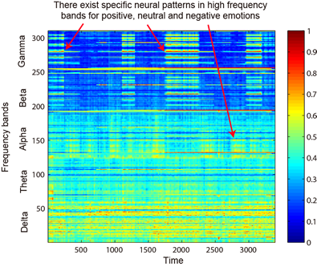
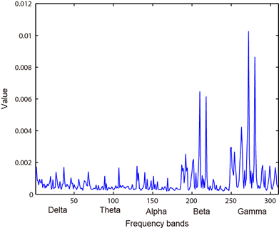
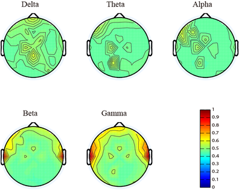
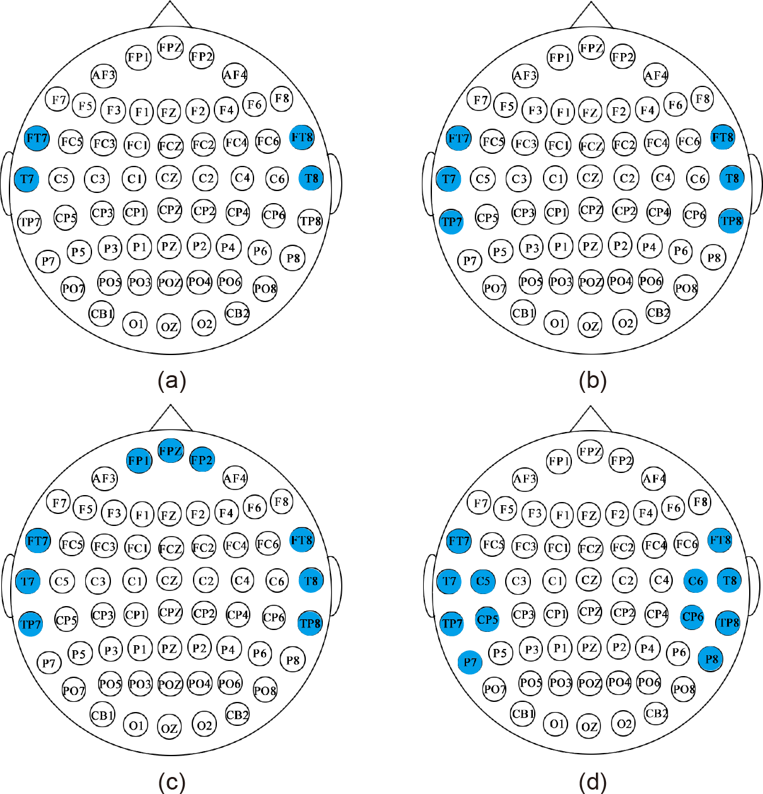

SEED Dataset
A dataset collection for various purposes using EEG signals


A Multimodal Approach to Estimating Vigilance Using EEG and Forehead EOG
Wei-Long Zheng, Bao-Liang Lu
Abstract: Objective. Covert aspects of ongoing user mental states provide key context information for user-aware human computer interactions. In this paper, we focus on the problem of estimating the vigilance of users using EEG and EOG signals.Approach. The PERCLOS index as vigilance annotation is obtained from eye tracking glasses. To improve the feasibility and wearability of vigilance estimation devices for real-world applications, we adopt a novel electrode placement for forehead EOG and extract various eye movement features, which contain the principal information of traditional EOG. We explore the effects of EEG from different brain areas and combine EEG and forehead EOG to leverage their complementary characteristics for vigilance estimation. Considering that the vigilance of users is a dynamic changing process because the intrinsic mental states of users involve temporal evolution, we introduce continuous conditional neural field and continuous conditional random field models to capture dynamic temporal dependency. Main results. We propose a multimodal approach to estimating vigilance by combining EEG and forehead EOG and incorporating the temporal dependency of vigilance into model training. The experimental results demonstrate that modality fusion can improve the performance compared with a single modality, EOG and EEG contain complementary information for vigilance estimation, and the temporal dependency-based models can enhance the performance of vigilance estimation. From the experimental results, we observe that theta and alpha frequency activities are increased, while gamma frequency activities are decreased in drowsy states in contrast to awake states. Significance. The forehead setup allows for the simultaneous collection of EEG and EOG and achieves comparative performance using only four shared electrodes in comparison with the temporal and posterior sites.
To collect EEG and EOG data, we developed a virtualreality-based simulated driving system. A total of 23 subjects (mean age: 23.3, STD: 1.4, 12 females) participated in the experiments. The duration of the entire experiment was approximately 2 hours. The participants were asked to drive the car in the simulated environments without any alertness. Both EEG and forehead EOG signals were recorded simultaneously using the Neuroscan system with a 1000 Hz sampling rate. Eye movements were simultaneously recorded using SMI ETG eye tracking glasses.
We separated EEG and EOG signals from the shared forehead electrodes. The main advantage of this concept is that we can leverage the favourable properties of both EEG and EOG modalities while simultaneously not increasing the setup cost.
Vigilance is a dynamic changing process because the intrinsic mental states of users involve temporal evolution. Modality fusion with temporal dependency can significantly enhance the performance in comparison with a single modality. Fusion of forehead EOG and forehead EEG achieves comparable performance with only four shared electrodes.
The continuous vigilance estimation of di erent methods in one experiment. As shown, the predictions from our proposed approaches are almost consistent with the true subjects' behaviours and cognitive states.
Reference
1. Wei-Long Zheng and Bao-Liang Lu, A multimodal approach to estimating vigilance using EEG and forehead EOG. Journal of Neural Engineering, 14(2): 026017, 2017. [link]
2. Xue-Qin Huo, Wei-Long Zheng, and Bao-Liang Lu, Driving Fatigue Detection with Fusion of EEG and Forehead EOG, in Proc. of International Joint Conference on Neural Networks (IJCNN-16), 2016: 897-904. [link]
3. Nan Zhang, Wei-Long Zheng, Wei Liu, and Bao-Liang Lu,Continuous Vigilance Estimation using LSTM Neural Networks. in Proc. of the 23nd International Conference on Neural Information Processing (ICONIP2016), 2016: 530-537. [link
Investigating Critical Frequency Bands andChannels for EEG-based Emotion Recognition with Deep Neural Networks
Wei-Long Zheng, Bao-Liang Lu
Abstract: To investigate critical frequency bands and channels, this paper introduces deep belief networks (DBN) to constructing EEG-based emotion recognition models for three emotions: positive, neutral and negative. We develop an EEG dataset acquired from 15 subjects. Each subject performs the experiments twice at the interval of a few days. DBNs are trained with differential entropy features extracted from multichannel EEG data. We examine the weights of the trained DBNs and investigate the critical frequency bands and channels. Four different profiles of 4, 6, 9 and 12 channels are selected. The recognition accuracies of these four profiles are relatively stable with the best accuracy of 86.65%, which is even better than that of the original 62 channels. The critical frequency bands and channels determined by using the weights of trained DBN are consistent with the existing observations. In addition, our experiment results show that neural signatures associated with different emotions do exist and they share commonality across sessions and individuals. We compare the performance of deep models with shallow models. The average accuracies of DBN, SVM, LR and KNN are 86.08%, 83.99%, 82.70% and 72.60%, respectively.
We find that there exist specific neural patterns in high frequency bands for positive, neutral and negative emotions through time-frequency analysis. For positive emotion, it shows that energy of beta and gamma frequency bands increases whereas neutral and negative emotions have lower energy of beta and gamma frequency bands. While the neural patterns of neutral and negative emotions have similar patterns in beta and gamma bands, neutral emotions have higher energy of alpha oscillations. These findings provide fundamental evidences for understanding the mechanism of emotion processing in the brain.

|

|
We design four different profiles of electrodes placements according to features of high peaks in the weight distribution and asymmetric properties in emotion processing.

|

|
The mean accuracies and standard deviations (%) of SVM for different profiles of electrodes sets are shown below:
Reference
1. Wei-Long Zheng, and Bao-Liang Lu, Investigating Critical Frequency Bands and Channels for EEG-based Emotion Recognition with Deep Neural Networks, IEEE Transactions on Autonomous Mental Development (IEEE TAMD) 7(3): 162-175, 2015. [link] [BibTex]
2. Wei-Long Zheng, Jia-Yi Zhu, and Bao-Liang Lu, Identifying Stable Patterns over Time for Emotion Recognition from EEG, to appear in IEEE Transactions on Affective Computing, 2017. [link]
3. Wei-Long Zheng, Hao-Tian Guo, and Bao-Liang Lu, Revealing Critical Channels and Frequency Bands for EEG-based Emotion Recognition with Deep Belief Network, the 7th International IEEE EMBS Conference on Neural Engineering (IEEE NER'15) 2015: 154-157. [link] [BibTex]
4. Wei-Long Zheng, Jia-Yi Zhu, Yong Peng, Bao-Liang Lu, EEG-based emotion classification using deep belief networks. IEEE International Conference on Multimedia and Expo (ICME) 2014: 1-6 [link] [BibTex]